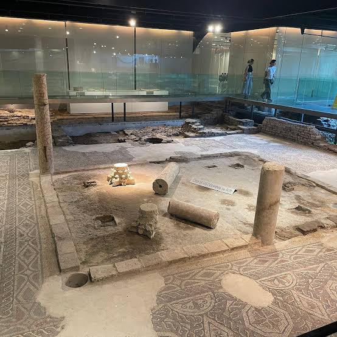
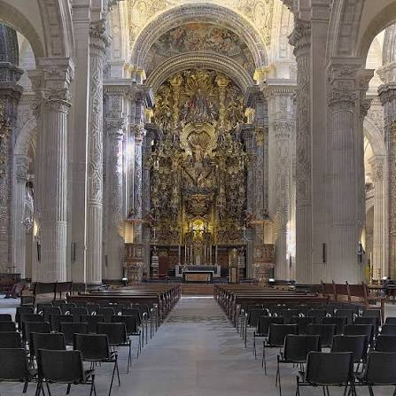
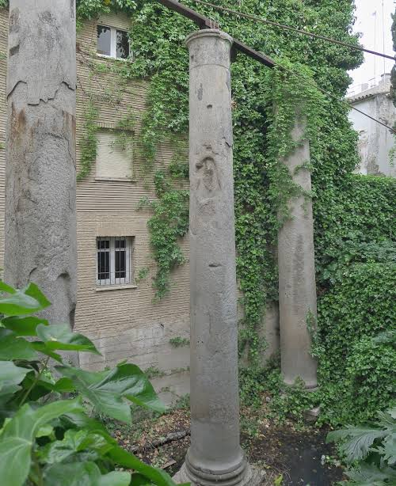
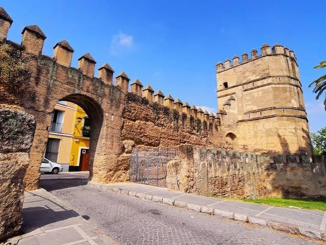
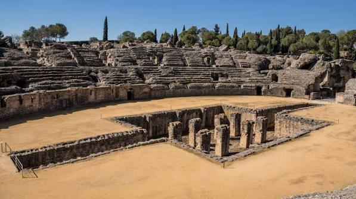
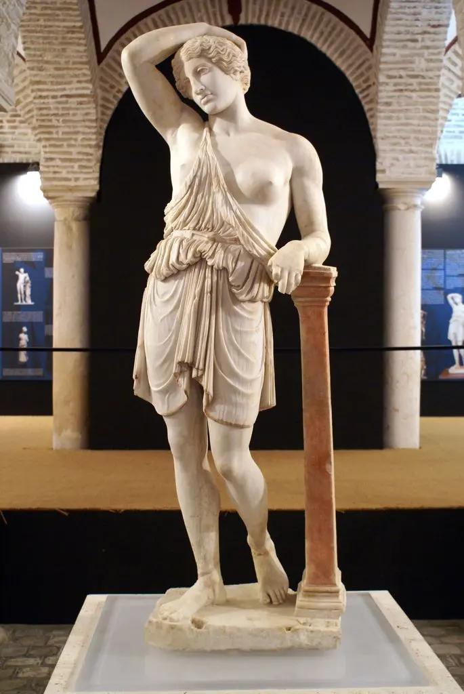

1. Antiquarium

Restos encontrados en la plaza de la Encarnación actual donde hallamos una factoría de salazones. En el conjunto se conservan diferentes mosaicos donde destaca el «mosaico de la medusa».
La antigua Sevilla fue denominada la colonia Julia Rómula Hispalis. Fue una de las ciudades más importantes del sur de la península ibérica, y curiosamente un personaje histórico de Roma: Julio César, está documentado que estuvo en la ciudad en la época de la Guerra Civil contra Pompeyo. En la actualidad, existen numerosas referencias y obras dedicadas a él, destacando las esculturas de la Alameda de Hércules (obra del siglo XVI).
Lugares más conocidos:
Durante la época romana, Hispalis se consolidó como uno de los centros comerciales y portuarios más importantes del sur de la península. A orillas del río Betis (actual Guadalquivir), la ciudad conectaba los recursos agrícolas y mineros de la Bética con la capital del Imperio Romano.

Restos encontrados en la plaza de la Encarnación actual donde hallamos una factoría de salazones. En el conjunto se conservan diferentes mosaicos donde destaca el «mosaico de la medusa».

Lugar donde se encontraba una basílica romana sobre la que se edifican diferentes templos: Visigodo, árabe...

Uno de los restos más sorprendentes de aquel periodo, encontramos tres columnas que pertenecen a un templo en torno al siglo I. Dos columnas del edificio fueron trasladadas en el siglo XVI a la Alameda de Hércules.

Encontrada muy recientemente en la plaza de San Francisco, es el mejor dato que hace realidad aquella leyenda de que Julio César fortificó con murallas la antigua Híspalis.

Es uno de los mejores ejemplos de las ciudades romanas en Hispania. Además de las típicas construcciones de este tipo de urbes, destaca el grandioso anfiteatro de Itálica, con capacidad para 25.000 espectadores, lo cual lo convierte en el mayor de toda la península ibérica. Nos encontramos con uno de los monumentos romanos más destacados de España, habiéndose solicitado su declaración como Patrimonio de la Humanidad.
La ciudad de Astigi (nombre romano de la actual Écija) se funda en el año 14 a.C. en el lugar donde existía un antiguo asentamiento turdetano, llegando a convertirse en capital de uno de los cuatro conventos jurídicos de la Bética.

Su ubicación, entre Córdoba y Sevilla, y su condición de zona de gran producción de aceite de oliva —producto de gran importancia en la dieta romana y generador de gran riqueza— propiciaron el crecimiento y esplendor de la ciudad.
Monumentos principales registrados en el proyecto (& base de datos XML):
Consulta la web oficial de Itálica o abre el archivo datos.xml.
| LUGAR ROMANO | CIUDAD | ENTRADA |
|---|---|---|
| 1. Antiquarium | Sevilla | 2.10 € |
| 2. Calle Mármoles | Sevilla | 0.00 € |
| 3. Conjunto de Itálica | Santiponce | 1.50 € |
| Nota: Tarifas oficiales de acceso a los espacios arqueológicos registrados. | ||